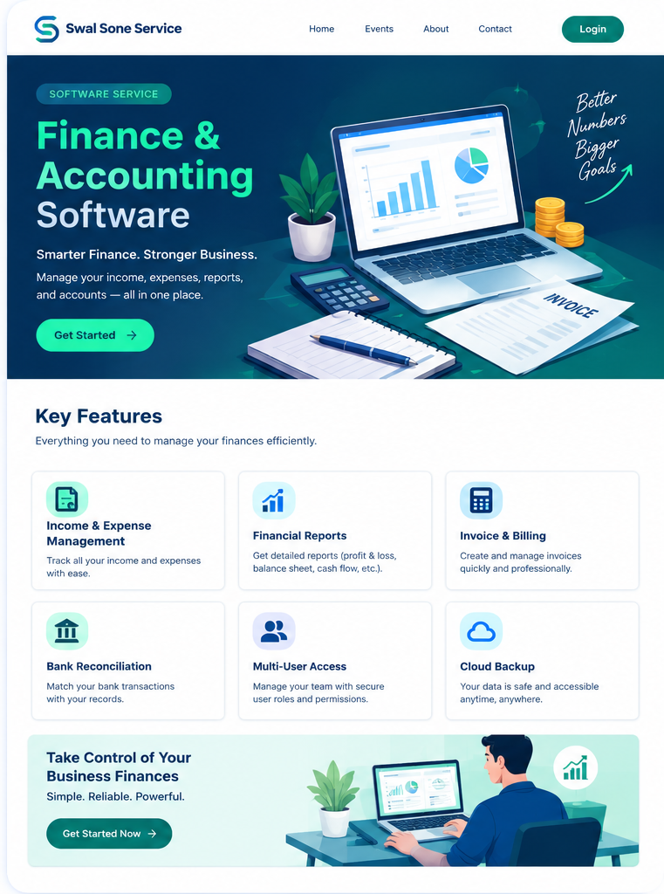

Income & Expense Management
Track incoming and outgoing transactions in a consistent workflow.
Simple, organized workflows for tracking business finances, preparing reports, managing invoices, and making informed decisions.

Discuss the right software setup for your team's workflow and reporting needs.
Track incoming and outgoing transactions in a consistent workflow.
Prepare clear summaries for reviewing performance and planning.
Organize invoices and billing records for your customers.
Compare bank transactions with your recorded entries.
Set up team workflows and appropriate access permissions.
Plan secure backups and access policies around your business needs.
Contact Swal Sone Service to discuss software options, setup requirements, and support for your business.